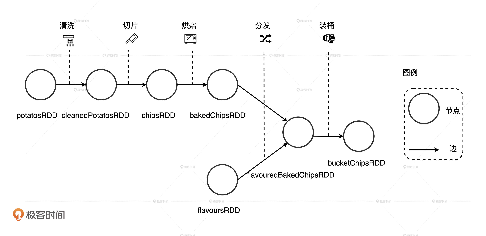
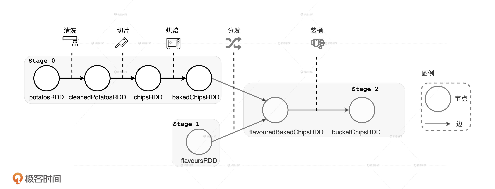
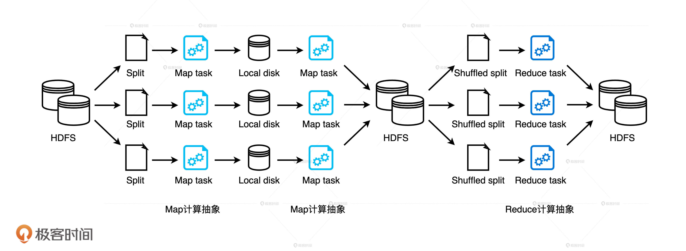
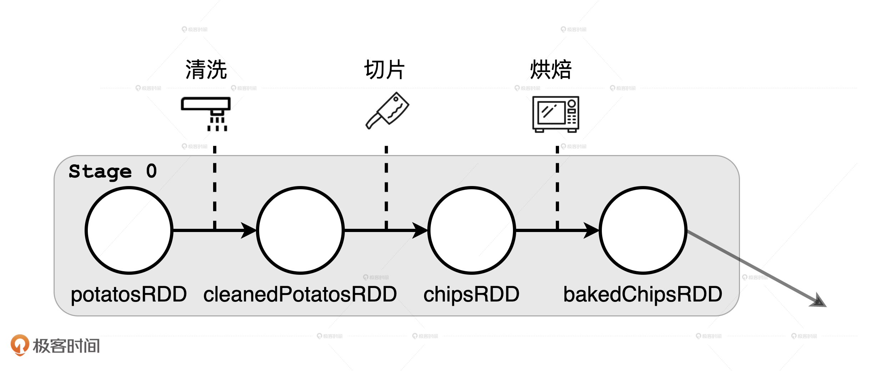
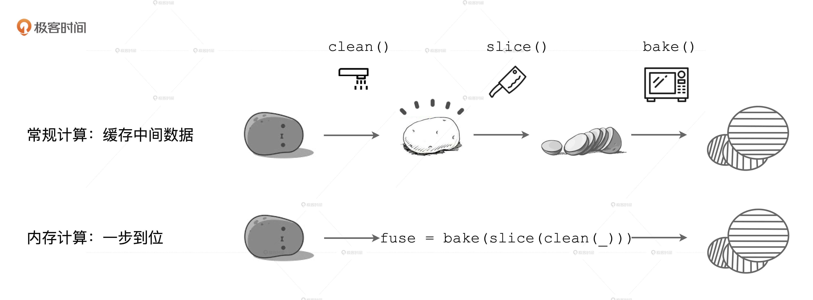

- 00 开篇词 Spark性能调优，你该掌握这些“套路”.md.html
- 01 性能调优的必要性：Spark本身就很快，为啥还需要我调优？.md.html
- 02 性能调优的本质：调优的手段五花八门，该从哪里入手？.md.html
- 03 RDD：为什么你必须要理解弹性分布式数据集？.md.html
- 04 DAG与流水线：到底啥叫“内存计算”？.md.html
- 05 调度系统：“数据不动代码动”到底是什么意思？.md.html
- 06 存储系统：空间换时间，还是时间换空间？.md.html
- 07 内存管理基础：Spark如何高效利用有限的内存空间？.md.html
- 08 应用开发三原则：如何拓展自己的开发边界？.md.html
- 09 调优一筹莫展，配置项速查手册让你事半功倍！（上）.md.html
- 10 调优一筹莫展，配置项速查手册让你事半功倍！（下）.md.html
- 11 为什么说Shuffle是一时无两的性能杀手？.md.html
- 12 广播变量（一）：克制Shuffle，如何一招制胜！.md.html
- 13 广播变量（二）：如何让Spark SQL选择Broadcast Joins？.md.html
- 14 CPU视角：如何高效地利用CPU？.md.html
- 15 内存视角（一）：如何最大化内存的使用效率？.md.html
- 16 内存视角（二）：如何有效避免Cache滥用？.md.html
- 17 内存视角（三）：OOM都是谁的锅？怎么破？.md.html
- 18 磁盘视角：如果内存无限大，磁盘还有用武之地吗？.md.html
- 19 网络视角：如何有效降低网络开销？.md.html
- 20 RDD和DataFrame：既生瑜，何生亮？.md.html
- 21 Catalyst逻辑计划：你的SQL语句是怎么被优化的？（上）.md.html
- 22 Catalyst物理计划：你的SQL语句是怎么被优化的（下）？.md.html
- 23 钨丝计划：Tungsten给开发者带来了哪些福报？.md.html
- 24 Spark 3.0（一）：AQE的3个特性怎么才能用好？.md.html
- 25 Spark 3.0（二）：DPP特性该怎么用？.md.html
- 26 Join Hints指南：不同场景下，如何选择Join策略？.md.html
- 27 大表Join小表：广播变量容不下小表怎么办？.md.html
- 28 大表Join大表（一）：什么是“分而治之”的调优思路？.md.html
- 29 大表Join大表（二）：什么是负隅顽抗的调优思路？.md.html
- 30 应用开发：北京市小客车（汽油车）摇号趋势分析.md.html
- 31 性能调优：手把手带你提升应用的执行性能.md.html
- Spark UI（上）深入解读Spark作业的“体检报告”.md.html
- Spark UI（下）：深入解读Spark作业的“体检报告”.md.html
- 期末考试 “Spark性能调优”100分试卷等你来挑战！.md.html
- 结束语 在时间面前，做一个笃定学习的人.md.html
- 捐赠
04 DAG与流水线：到底啥叫“内存计算”？
你好，我是吴磊。
在日常的开发工作中，我发现有两种现象很普遍。
第一种是缓存的滥用。无论是RDD，还是DataFrame，凡是能产生数据集的地方，开发同学一律用cache进行缓存，结果就是应用的执行性能奇差无比。开发同学也很委屈：“Spark不是内存计算的吗？为什么把数据缓存到内存里去，性能反而更差了？”
第二种现象是关于Shuffle的。我们都知道，Shuffle是Spark中的性能杀手，在开发应用时要尽可能地避免Shuffle操作。不过据我观察，很多初学者都没有足够的动力去重构代码来避免Shuffle，这些同学的想法往往是：“能把业务功能实现就不错了，费了半天劲去重写代码就算真的消除了Shuffle，能有多大的性能收益啊。”
以上这两种现象可能大多数人并不在意，但往往这些细节才决定了应用执行性能的优劣。在我看来，造成这两种现象的根本原因就在于，开发者对Spark内存计算的理解还不够透彻。所以今天，我们就来说说Spark的内存计算都有哪些含义？
第一层含义：分布式数据缓存
一提起Spark的“内存计算”的含义，你的第一反应很可能是：Spark允许开发者将分布式数据集缓存到计算节点的内存中，从而对其进行高效的数据访问。没错，这就是内存计算的第一层含义：众所周知的分布式数据缓存。
RDD cache确实是Spark分布式计算引擎的一大亮点，也是对业务应用进行性能调优的诸多利器之一，很多技术博客甚至是Spark官网，都在不厌其烦地强调RDD cache对于应用执行性能的重要性。
正因为考虑到这些因素，很多开发者才会在代码中不假思索地滥用cache机制，也就是我们刚刚提到的第一个现象。但是，这些同学都忽略了一个重要的细节：只有需要频繁访问的数据集才有必要cache，对于一次性访问的数据集，cache不但不能提升执行效率，反而会产生额外的性能开销，让结果适得其反。
之所以会忽略这么重要的细节，背后深层次的原因在于，开发者对内存计算的理解仅仅停留在缓存这个层面。因此，当业务应用的执行性能出现问题时，只好死马当活马医，拼命地抓住cache这根救命稻草，结果反而越陷越深。
接下来，我们就重点说说内存计算的第二层含义：Stage内部的流水线式计算模式。
在Spark中，内存计算有两层含义：第一层含义就是众所周知的分布式数据缓存，第二层含义是Stage内的流水线式计算模式。关于RDD缓存的工作原理，我会在后续的课程中为你详细介绍，今天咱们重点关注内存计算的第二层含义就可以了。
第二层含义：Stage内的流水线式计算模式
很显然，要弄清楚内存计算的第二层含义，咱们得从DAG的Stages划分说起。在这之前，我们先来说说什么是DAG。
什么是DAG？
DAG全称Direct Acyclic Graph，中文叫有向无环图。顾名思义，DAG 是一种“图”。我们知道，任何一种图都包含两种基本元素：顶点（Vertex）和边（Edge），顶点通常用于表示实体，而边则代表实体间的关系。在Spark的DAG中，顶点是一个个RDD，边则是RDD之间通过dependencies属性构成的父子关系。
从理论切入去讲解DAG，未免枯燥乏味，所以我打算借助上一讲土豆工坊的例子，来帮助你直观地认识DAG。上一讲，土豆工坊成功地实现了同时生产 3 种不同尺寸的桶装“原味”薯片。但是，在将“原味”薯片推向市场一段时间以后，工坊老板发现季度销量直线下滑，不由得火往上撞、心急如焚。此时，工坊的工头儿向他建议：“老板，咱们何不把流水线稍加改造，推出不同风味的薯片，去迎合市场大众的多样化选择？”然后，工头儿把改装后的效果图交给老板，老板看后甚是满意。

不过，改造流水线可是个大工程，为了让改装工人能够高效协作，工头儿得把上面的改造设想抽象成一张施工流程图。有了这张蓝图，工头儿才能给负责改装的工人们分工，大伙儿才能拧成一股绳、劲儿往一处使。在上一讲中，我们把食材形态类比成RDD，把相邻食材形态的关系看作是RDD间的依赖，那么显然，流水线的施工流程图就是DAG。

因为DAG中的每一个顶点都由RDD构成，对应到上图中就是带泥的土豆potatosRDD，清洗过的土豆cleanedPotatosRDD，以及调料粉flavoursRDD等等。DAG的边则标记了不同RDD之间的依赖与转换关系。很明显，上图中DAG的每一条边都有指向性，而且整张图不存在环结构。
那DAG是怎么生成的呢？
我们都知道，在Spark的开发模型下，应用开发实际上就是灵活运用算子实现业务逻辑的过程。开发者在分布式数据集如RDD、 DataFrame或Dataset之上调用算子、封装计算逻辑，这个过程会衍生新的子RDD。与此同时，子RDD会把dependencies属性赋值到父RDD，把compute属性赋值到算子封装的计算逻辑。以此类推，在子RDD之上，开发者还会继续调用其他算子，衍生出新的RDD，如此往复便有了DAG。
因此，从开发者的视角出发，DAG的构建是通过在分布式数据集上不停地调用算子来完成的。
Stages的划分
现在，我们知道了什么是DAG，以及DAG是如何构建的。不过，DAG毕竟只是一张流程图，Spark需要把这张流程图转化成分布式任务，才能充分利用分布式集群并行计算的优势。这就好比土豆工坊的施工流程图毕竟还只是蓝图，是工头儿给老板画的一张“饼”，工头儿得想方设法把它转化成实实在在的土豆加工流水线，让流水线能够源源不断地生产不同风味的薯片，才能解决老板的燃眉之急。
简单地说，从开发者构建DAG，到DAG转化的分布式任务在分布式环境中执行，其间会经历如下4个阶段：
- 回溯DAG并划分Stages
- 在Stages中创建分布式任务
- 分布式任务的分发
- 分布式任务的执行
刚才我们说了，内存计算的第二层含义在stages内部，因此这一讲我们只要搞清楚DAG是怎么划分Stages就够了。至于后面的3个阶段更偏向调度系统的范畴，所以我会在下一讲给你讲清楚其中的来龙去脉。
如果用一句话来概括从DAG到Stages的转化过程，那应该是：以Actions算子为起点，从后向前回溯DAG，以Shuffle操作为边界去划分Stages。
接下来，我们还是以土豆工坊为例来详细说说这个过程。既然DAG是以Shuffle为边界去划分Stages，我们不妨先从上帝视角出发，看看在土豆工坊设计流程图的DAG中，都有哪些地方需要执行数据分发的操作。当然，在土豆工坊，数据就是各种形态的土豆和土豆片儿。

仔细观察上面的设计流程图，我们不难发现，有两个地方需要分发数据。第一个地方是薯片经过烘焙烤熟之后，把即食薯片按尺寸大小分发到下游的流水线上，这些流水线会专门处理固定型号的薯片，也就是图中从bakedChipsRDD到flavouredBakedChipsRDD的那条线。同理，不同的调料粉也需要按照风味的不同分发到下游的流水线上，用于和固定型号的即食薯片混合，也就是图中从flavoursRDD到flavouredBakedChipsRDD那条分支。
同时，我们也能发现，土豆工坊的DAG应该划分3个Stages出来，如图中所示。其中，Stage 0包含四个RDD，从带泥土豆potatosRDD到即食薯片bakedChipsRDD。Stage 1比较简单，它只有一个RDD，就是封装调味粉的flavoursRDD。Stage 2包含两个RDD，一个是加了不同风味的即食薯片flavouredBakedChipsRDD，另一个表示组装成桶已经准备售卖的桶装薯片bucketChipsRDD。
你可能会问：“费了半天劲，把DAG变成Stages有啥用呢？”还真有用！内存计算的第二层含义，就隐匿于从DAG划分出的一个又一个Stages之中。不过，要弄清楚Stage内的流水线式计算模式，我们还是得从Hadoop MapReduce的计算模型说起。
Stage中的内存计算
基于内存的计算模型并不是凭空产生的，而是根据前人的教训和后人的反思精心设计出来的。这个前人就是Hadoop MapReduce，后人自然就是Spark。

MapReduce提供两类计算抽象，分别是Map和Reduce：Map抽象允许开发者通过实现map 接口来定义数据处理逻辑；Reduce抽象则用于封装数据聚合逻辑。MapReduce计算模型最大的问题在于，所有操作之间的数据交换都以磁盘为媒介。例如，两个Map操作之间的计算，以及Map与Reduce操作之间的计算都是利用本地磁盘来交换数据的。不难想象，这种频繁的磁盘I/O必定会拖累用户应用端到端的执行性能。
那么，这和Stage内的流水线式计算模式有啥关系呢？我们再回到土豆工坊的例子中，把目光集中在即食薯片分发之前，也就是刚刚划分出来的Stage 0。这一阶段包含3个处理操作，即清洗、切片和烘焙。按常理来说，流水线式的作业方式非常高效，带泥土豆被清洗过后，会沿着流水线被传送到切片机，切完的生薯片会继续沿着流水线再传送到烘焙烤箱，整个过程一气呵成。如果把流水线看作是计算节点内存的话，那么清洗、切片和烘焙这3个操作都是在内存中完成计算的。

你可能会说：“内存计算也不过如此，跟MapReduce相比，不就是把数据和计算都挪到内存里去了吗？”事情可能并没有你想象的那么简单。
在土豆工坊的例子里，Stage 0中的每个加工环节都会生产出中间食材，如清洗过的土豆、土豆片、即食薯片。我们刚刚把流水线比作内存，这意味着每一个算子计算得到的中间结果都会在内存中缓存一份，以备下一个算子运算，这个过程与开发者在应用代码中滥用RDD cache简直如出一辙。如果你曾经也是逢RDD便cache，应该不难想象，采用这种计算模式，Spark的执行性能不见得比MapReduce强多少，尤其是在Stages中的算子数量较多的时候。
既然不是简单地把数据和计算挪到内存，那Stage内的流水线式计算模式到底长啥样呢？在Spark中，流水线计算模式指的是：在同一Stage内部，所有算子融合为一个函数，Stage的输出结果由这个函数一次性作用在输入数据集而产生。这也正是内存计算的第二层含义。下面，我们用一张图来直观地解释这一计算模式。

如图所示，在上面的计算流程中，如果你把流水线看作是内存，每一步操作过后都会生成临时数据，如图中的clean和slice，这些临时数据都会缓存在内存里。但在下面的内存计算中，所有操作步骤如clean、slice、bake，都会被捏合在一起构成一个函数。这个函数一次性地作用在“带泥土豆”上，直接生成“即食薯片”，在内存中不产生任何中间数据形态。
因此你看，所谓内存计算，不仅仅是指数据可以缓存在内存中，更重要的是让我们明白了，通过计算的融合来大幅提升数据在内存中的转换效率，进而从整体上提升应用的执行性能。
这个时候，我们就可以回答开头提出的第二个问题了：费劲去重写代码、消除Shuffle，能有多大的性能收益？
由于计算的融合只发生在Stages内部，而Shuffle是切割Stages的边界，因此一旦发生Shuffle，内存计算的代码融合就会中断。但是，当我们对内存计算有了多方位理解以后，就不会一股脑地只想到用cache去提升应用的执行性能，而是会更主动地想办法尽量避免Shuffle，让应用代码中尽可能多的部分融合为一个函数，从而提升计算效率。
小结
这一讲，我们以两个常见的现象为例，探讨了Spark内存计算的含义。
在Spark中，内存计算有两层含义：第一层含义就是众所周知的分布式数据缓存，第二层含义是Stage内的流水线式计算模式。
对于第二层含义，我们需要先搞清楚DAG和Stages划分，从开发者的视角出发，DAG的构建是通过在分布式数据集上不停地调用算子来完成的，DAG以Actions算子为起点，从后向前回溯，以Shuffle操作为边界，划分出不同的Stages。
最后，我们归纳出内存计算更完整的第二层含义：同一Stage内所有算子融合为一个函数，Stage的输出结果由这个函数一次性作用在输入数据集而产生。
每日一练
今天的内容重在理解，我希望你能结合下面两道思考题来巩固一下。
我们今天说了，DAG以Shuffle为边界划分Stages，那你知道Spark是根据什么来判断一个操作是否会引入Shuffle的呢？
在Spark中，同一Stage内的所有算子会融合为一个函数。你知道这一步是怎么做到的吗？
期待在留言区看到你的思考和答案，如果对内存计算还有很多困惑，也欢迎你写在留言区，我们下一讲见！
© 2019 - 2023 Liangliang Lee. Powered by gin and hexo-theme-book.